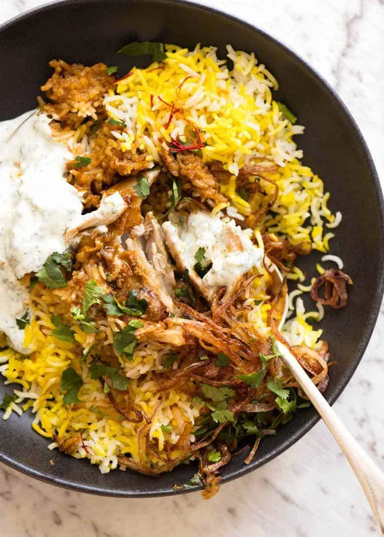

Essentially, it’s your favourite chicken curry (or vegetable or other
protein of choice) buried under a mound of delicately spiced fluffy rice,
all made in one pot. The rice is steamed over a low heat so it absorbs the
flavours of the curry bubbling away underneath.
So in a nutshell,
it’s every curry loving-carb monsters’ dream come true. It’s got my name
written all over it
You’ll find variations of Biryani all across the Indian subcontinent, from Pakistan to Bangladesh, Afghanistan to India. There are 2 main types – one where the protein and/or vegetables are cooked mixed throughout the rice, and the other version known as Hyderabad-style biryani in India where meat and rice are layered and cook in a sealed pot over fire. The latter is the style of biryani I’m sharing today.